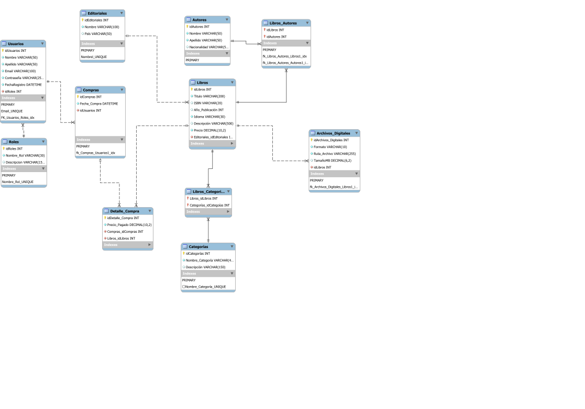

Integrantes: Marco Graña, Matías Ramírez
En esta segunda etapa del proyecto actualizamos el diseño conceptual para reflejar los nuevos requerimientos del sistema.
Se agregaron la tabla Detalle_Compra que está relacionada con Compras, permitiendo registrar el detalle de cada libro adquirido en una compra.
Partiendo del diseño conceptual actualizado, trasladamos los cambios al modelo lógico relacional.
Le agregamos la tabla intermedia Libros_Categorías y agregamos la tabla Detalle_Compra que está conectada con Compras y Libros.

La normalización es un proceso que organiza los datos en distintas tablas para reducir la duplicación y evitar anomalías al insertar, actualizar o eliminar información.
Cada atributo contiene un valor único, sin listas ni grupos repetidos.
Cumple 1FN y todos los atributos dependen de la clave primaria completa.
Cumple 2FN y los atributos no clave dependen directamente de la clave primaria, sin dependencias transitivas.
En nuestra biblioteca separamos la información en tablas como Usuarios, Roles, Libros, Editoriales y Autores. Por ejemplo, los datos de una editorial se almacenan una sola vez en Editoriales, y los libros se relacionan con ella mediante una clave foránea. Así evitamos repetir los datos de la editorial en cada libro.
SQL es el lenguaje utilizado para gestionar bases de datos relacionales. Se divide, entre otros, en dos grupos de sentencias:
Permite definir y modificar la estructura de la base de datos.
CREATE
ALTER
DROP
Permite insertar, modificar, eliminar y consultar los registros.
INSERT
UPDATE
DELETE
SELECT
Ejemplo aplicado al proyecto:
-- DDL
CREATE DATABASE BibliotecaDigital1;
-- DML
INSERT INTO Roles (Nombre_Rol)
VALUES ('Lector');
UPDATE Libros
SET Precio = 15000
WHERE idLibros = 1;
SELECT * FROM Libros;Las funciones escalares realizan operaciones sobre valores individuales y devuelven un resultado por cada fila consultada.
Permiten transformar, calcular o presentar los datos de una manera más útil.
UPPER()
Convierte texto a mayúsculas.
ROUND()
Redondea un número.
CONCAT()
Une cadenas de texto.
YEAR()
Extrae el año de una fecha.
LENGTH()
Obtiene la longitud de un texto.
DATEDIFF()
Calcula la diferencia entre dos fechas.
Ejemplo de nuestro proyecto:
SELECT
UPPER(Titulo) AS titulo,
ROUND(Precio * 1.21, 2) AS precio_con_iva
FROM Libros;Las funciones agregadas realizan cálculos sobre un conjunto de registros y devuelven un resultado resumido.
COUNT() cuenta registrosSUM() suma valoresAVG() calcula promedioMAX() valor máximoMIN() valor mínimoGROUP BY
Agrupa registros que comparten un mismo valor.
HAVING
Filtra los grupos después de realizar la agrupación.
WHERE
Filtra registros individuales antes de agruparlos.
Ejemplo de nuestro proyecto:
SELECT
e.Nombre AS editorial,
COUNT(*) AS cantidad_libros
FROM Editoriales e
INNER JOIN Libros l
ON l.idEditoriales = e.idEditoriales
GROUP BY e.idEditoriales, e.Nombre
HAVING COUNT(*) > 1;Una función definida por el usuario es una función creada por el programador para realizar una operación específica dentro de la base de datos.
A diferencia de las funciones incorporadas de MySQL, las UDF son desarrolladas según las necesidades del sistema.
RETURN.
Ejemplo de nuestro proyecto:
CREATE FUNCTION fn_descuento(
p_precio DECIMAL(10,2),
p_porcentaje DECIMAL(5,2)
)
RETURNS DECIMAL(10,2)
DETERMINISTIC
BEGIN
RETURN p_precio -
(p_precio * p_porcentaje / 100);
END;Un trigger es un conjunto de instrucciones que se ejecuta automáticamente cuando ocurre un evento determinado en una tabla.
INSERT Inserción de registros
UPDATE Modificación de registros
DELETE Eliminación de registros
BEFORE Antes de realizar la operación
AFTER Después de realizar la operación
OLD Representa los valores anteriores
NEW Representa los valores nuevos
Ejemplo de nuestro proyecto:
CREATE TRIGGER trg_libros_auditar_precio
AFTER UPDATE ON Libros
FOR EACH ROW
BEGIN
IF OLD.Precio <> NEW.Precio THEN
INSERT INTO Auditoria_Precios
(idLibros, Precio_Anterior, Precio_Nuevo)
VALUES
(OLD.idLibros, OLD.Precio, NEW.Precio);
END IF;
END;La integridad referencial es una regla que garantiza que las relaciones entre tablas sean válidas.
Se implementa mediante claves foráneas (FK), que vinculan un registro con otro existente en una tabla relacionada.
idRoles que debe corresponder a un rol existente en la tabla Roles.
Al eliminar o modificar un registro relacionado:
ON DELETE CASCADE
Elimina automáticamente los registros dependientes.
ON DELETE RESTRICT
Impide eliminar un registro si tiene registros relacionados.
ON UPDATE CASCADE
Actualiza automáticamente las claves foráneas cuando cambia la clave referenciada.
Hemos preparado un script con todo lo explicado para ver el funcionamiento real de BibliotecaDigital en el gestor de base de datos.